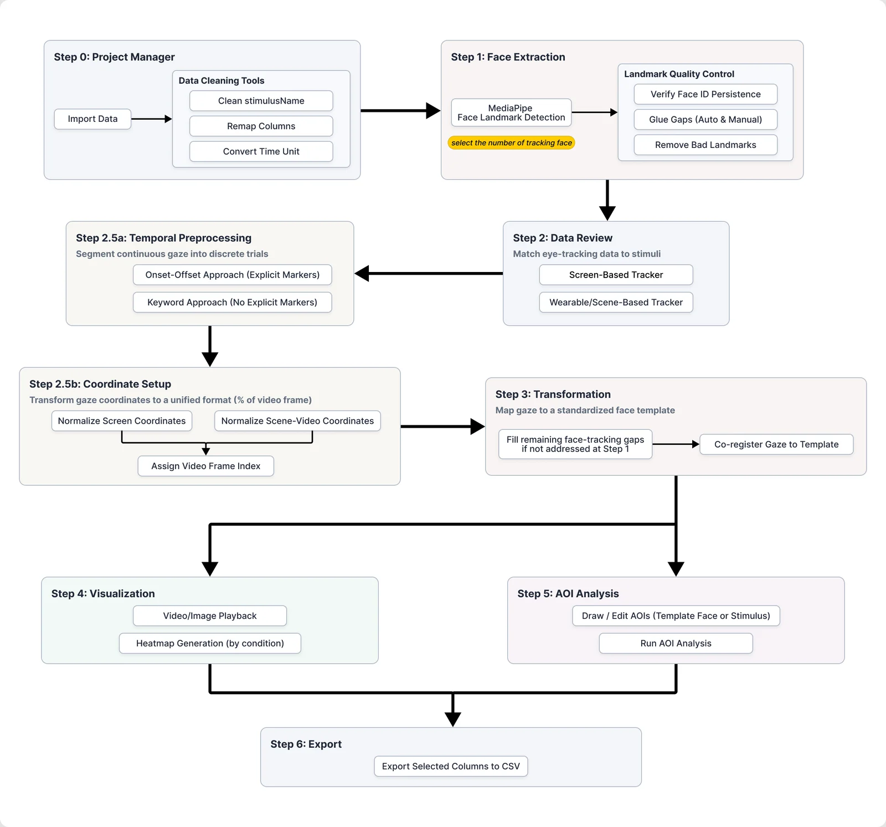

See where participants looked on moving faces
iTemplate2 maps eye-tracking gaze data onto a normalised face template, so you can analyse looking behaviour on dynamic face videos and static images without hand-coding frames.

From raw gaze to analysis-ready data
A guided, step-by-step workflow takes you through the whole pipeline inside one app.
- Extract facesMediaPipe finds facial landmarks in every frame of your videos or images, with gap detection and repair.
- Map gazeRaw gaze coordinates are transformed into a common template face space.
- VisualisePlay gaze over the stimulus and build heatmaps, normalised per participant.
- Analyse AOIsDraw areas of interest on the template or the stimulus and compute gaze metrics.
- ExportSave the columns you need to CSV for your statistics software.
One pipeline, every tracker
iTemplate2 does not depend on a particular eye tracker. You map your own columns (coordinates, timestamps, trial markers and stimulus names), and the app handles screen-based and wearable recordings alike.

Key features
Built for researchers who work with faces in motion.
Dynamic and static stimuli
Process videos frame by frame or work with still face images in the same project.
Multi-face scenes
Select faces to analyse, and review frames where facial regions overlap with an auditable decision log.
Custom templates
Use the built-in average face, or choose a template face from your own stimuli or an uploaded image.
Landmark quality control
Find landmark gaps, set a maximum fill threshold, and glue gaps by interpolation.
Heatmaps and playback
Interactive gaze overlays and grouped heatmaps with video and image export.
Dual-context AOIs
Define AOIs on the template face or on the original stimulus, then compute metrics per AOI.
Flexible import
Column mapping, stimulus-name cleaning and temporal preprocessing with onset/offset trial segmentation.
Reproducible projects
Saved settings, deterministic output names and a timestamped processing log for every step.
Screenshots
Click an image to view it full size.


Install and run
Requires Python 3.10 to 3.13 on macOS, Windows or Linux. The face model and template are included.
Prefer conda? Run conda env create -f environment.yml and conda activate iTemplate2 instead of step 2.
Linux: install xcb-util-cursor first (PyQt6 requirement).
New to the app? Read Before You Begin to check that you know your data's columns, timing and stimulus names, then follow Steps 0 to 6 in the sidebar.
Cite iTemplate2
If iTemplate2 helps your research, please cite the paper.
Xiao, N. G., Román-Caballero, R., Fang, W., Ripley, S., Han, D., & Trainor, L. J. (in press). iTemplate2: An open-source Python toolbox for automatic eye-movement analysis of dynamic facial stimuli.
Questions or bug reports? Open an issue on GitHub.